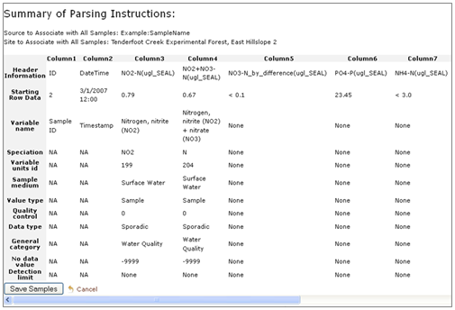

This section provides the necessary background for successfully loading field observation data into VOEIS. Field observation data is measured by an instrument while it is deployed in the field. Field observations are generated by handheld instruments as well as dataloggers connected to sensor arrays.
The VOEIS workflow for loading field observation data is constructed to load data from individual files. VOEIS currently supports comma delimited text files (.csv) and Campbell scientific data files (.dat). These files may have one or more header rows, but the first instance of all measured data values must occur in the same row.
The current VOEIS workflow requires that sample data input files be site specific. A single input file must not contain data from more than one site. Data files must include date/time stamps, and data sample values for one or more variables. Data must be organized to include individual columns for date/time stamps, and variables such that a given row contains data values (for one or more variables) that were collected at a specific date/time. VOEIS can accept and parse numerous date/time formats, however, all date/time information must be contained in a single column. For some dataloggers, this may require some amount of post-processing. The following format is recommended: ‘MM/DD/YYYY HH:MM’. A single numeric value or text string must represent all no-data values in any given column. It is a good idea to preserve metadata for each variable in the data input file as headers.
After saving the data file as a .csv file, use the following steps to load data into VOEIS.
1. Navigate to the VOEIS Data Hub using your web browser and log in. Then select the project you would like to add data to from the Projects dropdown as shown below.
2. In the (Project_Name) dropdown menu, select ‘Add Logger Data’
3. In Step 1 of the data upload wizard, select the site that your data will be associated with from the site list.
You can sort the site list by clicking on the header boxes, or define a custom filter by clicking the button on the upper left with the yellow arrow in it. Clicking this button calls the pop-out window below. Custom filtering rules are described using Boolean logic and can be applied to a single column, or multiple columns.

4. Next, browse to the file to be loaded. Click the ‘Open’ button.
5. Select the row that the data sample values begin on. All rows above this row will be ignored when the data is loaded into VOEIS.
6. You must next decide whether to define a new parsing template for parsing your data, or reuse a previously defined template. Click ‘Upload File’.

7. If you decided to parse your data with and existing template, skip to Step 9. Otherwise, you will need to name and describe the data template you are about to create. Select the appropriate Source information.
If the appropriate source is not already contained in the dropdown box, click the green button on the left. A pop-out window will appear and allow you to describe a new data source.

Describe the time support associated with your data file. You must identify whether your time stamps are recorded in UTC Date Time or Local Date Time. If they are recorded in Local Date Time, you need to select the UTC Offset (This is the time zone correction for the location where the measurements were collected) and identify whether or not a Daylight Savings Time adjustment needs to be applied to all timestamps in the file (e.g. the Montana UTC Offset is -7). Note: do NOT adjust the UTC Offset to account for Daylight Savings Time AND select the Daylight Savings Time checkbox. Account for Daylight Savings Time using only one of these methods.
After all of the data descriptor dropdowns are populated, the ‘Next’ button will be activated. Click ‘Next’ to begin describing each of the columns in the data file.
8. Each column in the data file must be described using one of the options in the ‘Select Column Assignment’ dropdown list displayed below.
The ‘Assign The Timestamp To This Column’ option may only be used once. The “Assign Vertical Offsets” option should not be used at this stage of the workflow. You may choose to “Ignore” as many columns as you wish.
Variables can be assigned to a column of data sample values in two ways. The first method is to ‘Assign An Existing Variable’ to the column. When this option is selected, a data table pop-out appears. This table includes all of the variables previously described in this project. You can sort results in the data table by clicking one of the column header boxes. This will sort rows alphabetically (string values) or in ascending order (numeric values) by the values contained in the selected column. Secondary filters can be applied in subsequent columns in the same manner.

Another option for filtering the variables table is to apply custom filters. To do this, click the small button with the yellow arrow located in the upper left of the pop-out window. This button calls the pop-out window below. Custom filtering rules can be described using Boolean logic and applied to either a single column or multiple columns.

If you choose to select an existing variable, be sure to check each of the columns in the table to ensure that the variable you select is associated with the appropriate meta-data.
The second means for assigning a variable to a column of data values is to select the ‘Add A New Variable’ option from the ‘Select Column Assignment’ dropdown list. Selecting this option calls a pop-out window like the one shown below. You can add fields to dropdown lists using the green button to the left of the dropdown list title. After all of the required dropdown lists are populated, click the ‘Create Variable’ button.
NOTE: Do not reuse a single variable_id multiple times in a single parsing template (ex. assigning two data columns with the same temperature variable_id). Doing so will result in replicate data values for a single time_stamp:variable_id pair, and will significantly impede interpretation of data queried from VOEIS.
9. As columns in the data file are described, a summary of the parsing instructions is populated at the bottom of the page. Preview this summary to ensure that all of the data fields are defined correctly. If you spot an error in the summary table, simply scroll up to the column where the error exists and edit that column’s description.

10. When all columns are described and the summary table has been checked carefully to ensure that the data file is correctly characterized, click the ‘Save Samples’ button.
Created with the Personal Edition of HelpNDoc: Free PDF documentation generator